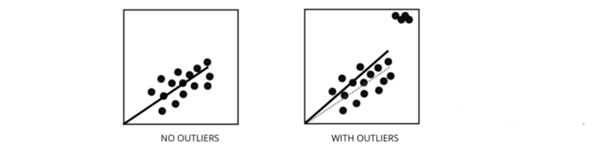
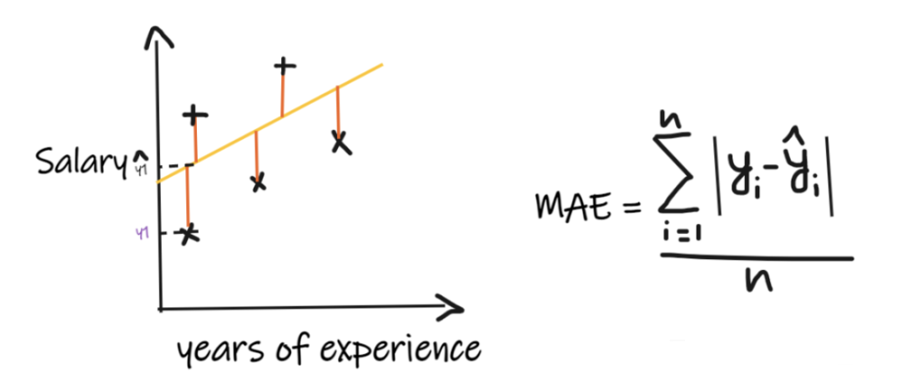
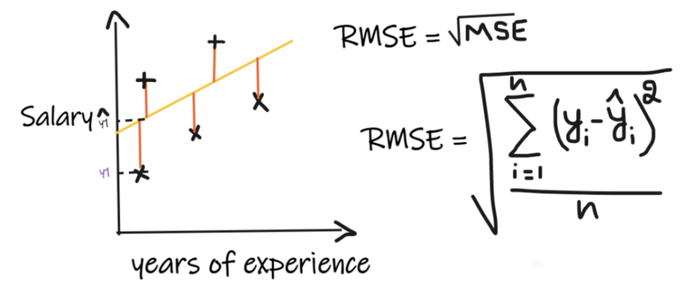
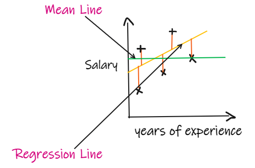
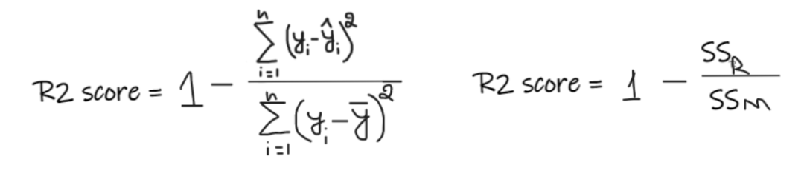
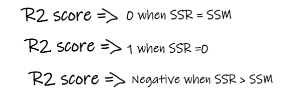
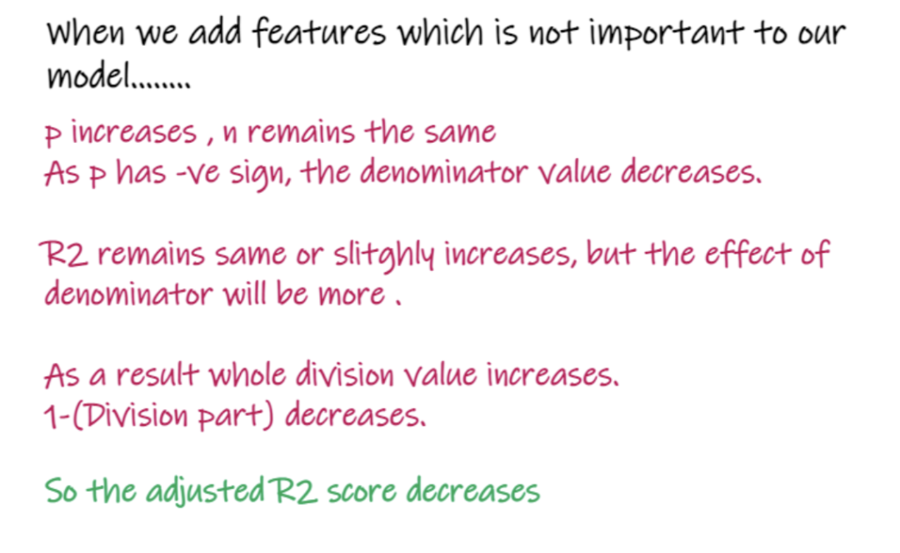
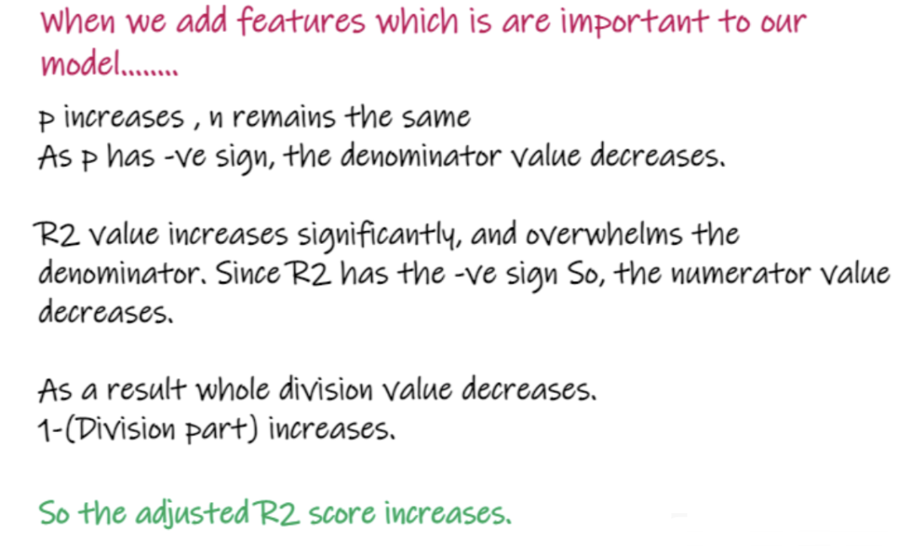

机器学习—回归模型
一、线性回归的假设是什么
线性回归有四个假设：
- 线性：自变量（x）和因变量（y）之间应该存在线性关系，这意味着x值的变化也应该在相同方向上改变y值。
- 独立性：特征应该相互独立，这意味着最小的多重共线性。
- 正态性：残差应该是正态分布的。
- 同方差性：回归线周围数据点的方差对于所有值应该相同。
二、什么是残差，它如何用于评估回归模型
残差是指预测值与观测值之间的误差。它测量数据点与回归线的距离。它是通过从观察值中减去预测值的计算机。
残差图是评估回归模型的好方法。它是一个图表，在垂直轴上显示所有残差，在 x 轴上显示特征。如果数据点随机散布在没有图案的线上，那么线性回归模型非常适合数据，否则我们应该使用非线性模型。
三、如何区分线性回归模型和非线性回归模型
两者都是回归问题的类型。两者的区别在于他们训练的数据。
线性回归模型假设特征和标签之间存在线性关系，这意味着如果我们获取所有数据点并将它们绘制成线性（直线）线应该适合数据。
非线性回归模型假设变量之间没有线性关系。非线性（曲线）线应该能够正确地分离和拟合数据。
找出数据是线性还是非线性的三种最佳方法：
- 残差图；
- 散点图；
- 假设数据是线性的，训练一个线性模型并通过准确率进行评估。
四、什么是多重共线性，它如何影响模型性能
当某些特征彼此高度相关时，就会发生多重共线性。相关性是指表示一个变量如何受到另一个变量变化影响的度量。
如果特征 a 的增加导致特征 b 的增加，那么这两个特征是正相关的。如果 a 的增加导致特征 b 的减少，那么这两个特征是负相关的。在训练数据上有两个高度相关的变量会导致多重共线性，因为它的模型无法在数据中找到模式，从而导致模型性能不佳。所以在训练模型之前首先要尽量消除多重共线性。
五、异常值如何影响线性回归模型的性能
异常值是值与数据点的平均值范围不同的数据点。换句话说，这些点与数据不同或在第 3 标准之外。

线性回归模型试图找到一条可以减少残差的最佳拟合线。如果数据包含异常值，则最佳拟合线将向异常值移动一点，从而增加错误率并得出具有非常高 MSE 的模型。
六、什么是MSE，和MAE有什么区别
MSE代表均方误差，它是实际值和预测值的平方差。而MAE是目标值和预测值之间的绝对差。
MSE 会惩罚大错误，而 MAE 不会。随着 MSE 和 MAE 的值都降低，模型趋向于一条更好的拟合线。
七、L1 和 L2 正则化是什么，应该在什么时候使用？
在机器学习中，我们的主要目标是创建一个可以在训练和测试数据上表现更好的通用模型，但是在数据非常少的情况下，基本的线性回归模型往往会过度拟合，因此我们会使用 l1 和l2 正则化。
L1 正则化或 lasso 回归通过在成本函数内添加添加斜率的绝对值作为惩罚项。有助于通过删除斜率值小于阈值的所有数据点来去除异常值。
L2 正则化或ridge 回归增加了相当于系数大小平方的惩罚项。它会惩罚具有较高斜率值的特征。
l1 和 l2 在训练数据较少、方差高、预测特征大于观察值以及数据存在多重共线性的情况下都很有用。
八、异方差是什么意思
它是指最佳拟合线周围的数据点的方差在一个范围内不一样的情况。它导致残差的不均匀分散。如果它存在于数据中，那么模型倾向于预测无效输出。检验异方差的最好方法之一是绘制残差图。
数据内部异方差的最大原因之一是范围特征之间的巨大差异。例如，如果我们有一个从 1 到 100000 的列，那么将值增加 10% 不会改变较低的值，但在较高的值时则会产生非常大的差异，从而产生很大的方差差异的数据点。
九、方差膨胀因子的作用是什么
方差膨胀因子（vif）用于找出使用其他自变量可预测自变量的程度。
让我们以具有 v1、v2、v3、v4、v5 和 v6 特征的示例数据为例。现在，为了计算 v1 的 vif，将其视为一个预测变量，并尝试使用所有其他预测变量对其进行预测。
如果 VIF 的值很小，那么最好从数据中删除该变量。因为较小的值表示变量之间的高相关性。
十、逐步回归如何工作
逐步回归是在假设检验的帮助下，通过移除或添加预测变量来创建回归模型的一种方法。它通过迭代检验每个自变量的显著性来预测因变量，并在每次迭代之后删除或添加一些特征。它运行n次，并试图找到最佳的参数组合，以预测因变量的观测值和预测值之间的误差最小。
它可以非常高效地管理大量数据，并解决高维问题。
十一、除了MSE 和 MAE 外回归还有什么重要的指标么？
指标一：平均绝对误差（MAE）

平均绝对误差 (MAE) 是最简单的回归度量。它将每个实际值和预测值的差值相加，最后除以观察次数。为了使回归模型被认为是一个好的模型，MAE 应该尽可能小。
MAE的优点是：简单易懂。结果将具有与输出相同的单位。例如：如果输出列的单位是 LPA，那么如果 MAE 为 1.2，那么我们可以解释结果是 +1.2LPA 或 -1.2LPA，MAE 对异常值相对稳定（与其他一些回归指标相比，MAE 受异常值的影响较小）。
MAE的缺点是：MAE使用的是模函数，但模函数不是在所有点处都可微的，所以很多情况下不能作为损失函数。
指标二：均方误差（MSE）
MSE取每个实际值和预测值之间的差值，然后将差值平方并将它们相加，最后除以观测数量。为了使回归模型被认为是一个好的模型，MSE 应该尽可能小。
MSE的优点：平方函数在所有点上都是可微的，因此它可以用作损失函数。
MSE的缺点：由于 MSE 使用平方函数，结果的单位是输出的平方。因此很难解释结果。由于它使用平方函数，如果数据中有异常值，则差值也会被平方，因此，MSE 对异常值不稳定。
指标三：均方根误差 (RMSE)

均方根误差（RMSE）取每个实际值和预测值之间的差值，然后将差值平方并将它们相加，最后除以观测数量。然后取结果的平方根。因此，RMSE 是 MSE 的平方根。为了使回归模型被认为是一个好的模型，RMSE 应该尽可能小。
RMSE 解决了 MSE 的问题，单位将与输出的单位相同，因为它取平方根，但仍然对异常值不那么稳定。
上述指标取决于我们正在解决的问题的上下文， 我们不能在不了解实际问题的情况下，只看 MAE、MSE 和 RMSE 的值来判断模型的好坏。
指标四：R2 score

如果我们没有任何输入数据，但是想知道他在这家公司能拿到多少薪水，那么我们能做的最好的事情就是给他们所有员工薪水的平均值。

R2 score 给出的值介于 0 到 1 之间，可以针对任何上下文进行解释。它可以理解为是拟合度的好坏。
SSR 是回归线的误差平方和，SSM 是均线误差的平方和。我们将回归线与平均线进行比较。

- 如果 R2 得分为 0，则意味着我们的模型与平均线的结果是相同的，因此需要改进我们的模型。
- 如果 R2 得分为 1，则等式的右侧部分变为 0，这只有在我们的模型适合每个数据点并且没有出现误差时才会发生。
- 如果 R2 得分为负，则表示等式右侧大于 1，这可能发生在 SSR > SSM 时。这意味着我们的模型比平均线最差，也就是说我们的模型还不如取平均数进行预测。
如果我们模型的 R2 得分为 0.8，这意味着可以说模型能够解释 80% 的输出方差。也就是说，80%的工资变化可以用输入(工作年限)来解释，但剩下的20%是未知的。
如果我们的模型有2个特征，工作年限和面试分数，那么我们的模型能够使用这两个输入特征解释80%的工资变化。
R2的缺点：
随着输入特征数量的增加，R2会趋于相应的增加或者保持不变，但永远不会下降，即使输入特征对我们的模型不重要(例如，将面试当天的气温添加到我们的示例中，R2是不会下降的即使温度对输出不重要)。
指标五：Adjusted R2 score
上式中R2为R2，n为观测数(行)，p为独立特征数。Adjusted R2解决了R2的问题。
当我们添加对我们的模型不那么重要的特性时，比如添加温度来预测工资…..

当添加对模型很重要的特性时，比如添加面试分数来预测工资……
